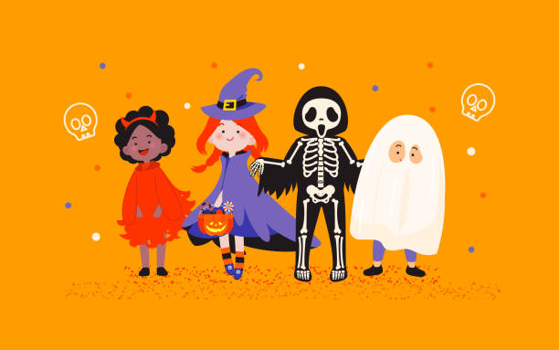

Find Your Halloween Fun
Looking for ways to celebrate Halloween? Explore these fun activities and find inspiration for a spooky season with family and friends!
Pumpkin Carving 🎃

Pumpkin carving is a popular Halloween tradition. People carve faces and creative designs into pumpkins to make jack-o'-lanterns.
Trick-or-Treating 🍬

Trick-or-treating is a favorite Halloween tradition. Children dress up in costumes and visit homes in their neighborhoods to receive candy and other treats.
Halloween Costumes 👻

People dress up as witches, vampires, ghosts, superheroes, and their favorite characters. Friends and families can coordinate their costumes!
Haunted Houses 🏚️

Haunted houses offer a spooky adventure with creepy decorations, scary sounds, fog, and surprising encounters.